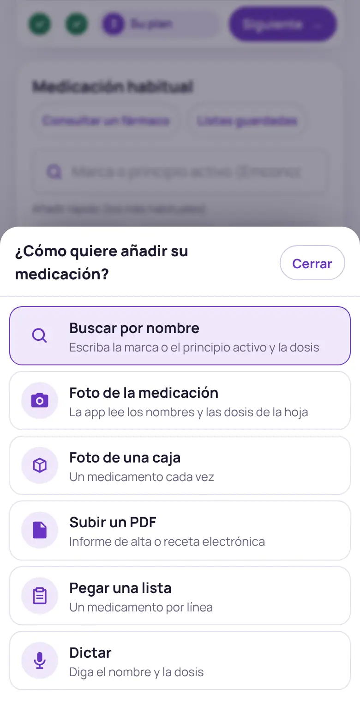

Pauta Activa le dice qué tener en cuenta para hacer ejercicio con su medicación. Solo necesita tres cosas: sus datos, su lista de medicamentos y un minuto para leer «Lo esencial». Todo se queda en su dispositivo.
-
1Sus datos
Indique su edad, si ha tenido alguna caída en el último año y su situación clínica (diabetes, corazón, riñón…). Rellene solo lo que sepa: lo que quede en blanco no bloquea nada.
- El botón ? junto a cada apartado explica para qué sirve.
- El pulso en reposo es opcional; con él la app calcula sus pulsaciones de entrenamiento.
- Si tiene 5 minutos, el test SPPB guiado mide su forma física y ajusta el plan.

Datos básicos, con la ayuda «?» en cada apartado. -
2Su medicación
Escriba la marca o el principio activo en el buscador (por ejemplo, «Emconcor» o «bisoprolol»), elija la presentación y añada la dosis y las tomas. Debajo tiene los medicamentos más habituales para añadirlos con un toque.
- Cada tarjeta muestra el grupo del fármaco, la dosis y a qué hora lo toma (desayuno, comida, cena, noche): márquelo para que la app calcule la mejor franja para entrenar.
- Puede editar la dosis, pausar un medicamento o quitarlo; siempre hay «Deshacer».

Buscar por nombre y añadir con la dosis. -
3Otras formas de añadirla
Con el botón «Más formas de añadir» puede subir una foto de su hoja de medicación o de una caja, un PDF (informe de alta o receta), pegar una lista escrita, dictarla con la voz o escanear el código de barras de la caja.
La lectura se hace en su dispositivo; nada se envía a ningún servidor. Compruebe siempre que la lista resultante coincide con la suya.

Todas las vías, en una hoja. -
4El veredicto y lo esencial
En cuanto hay medicación aparece el informe. Arriba, el veredicto en una frase y tres botones: ver mi plan, descargar y compartir. Debajo, «Su plan está al N %» le propone el siguiente paso para afinarlo (cribado de seguridad, pulso, horas de las tomas…).
- Lo esencial: de 3 a 5 puntos en lenguaje llano, con el botón «Escuchar».
- Las pestañas (antes de empezar, aeróbico, fuerza, equilibrio, ¿cuándo?, interacciones) dan el detalle, con un contador de avisos en cada una.
- El ? junto a las acciones explica qué significan atención, precaución y para saber.

Veredicto, acciones y siguiente paso recomendado. -
5Mi plan
En la pestaña Mi plan elige sus días de ejercicio y ve la sesión de cada día (fuerza y equilibrio, aeróbico o descanso). «Empezar sesión» le guía con un cronómetro y un chequeo previo; «Registrar sesión» anota minutos, esfuerzo y síntomas.
- El apartado aeróbico muestra su zona de intensidad: pulsaciones objetivo o, si su medicación no lo permite, la prueba del habla.
- La barra inferior lleva a cada sección: datos, medicación, informe y plan.

Su semana y la sesión de hoy. -
6Llévese el plan
Al final del informe están los documentos: resumen para su médico, resumen para usted, ficha para el entrenador y tarjeta para la nevera (A5). También puede compartir lo esencial por WhatsApp o correo, copiar un enlace con su lista o mostrar un código QR.
Los enlaces y los PDF no llevan su nombre: solo la medicación y los datos que haya introducido.

PDF para su médico, para usted, para el entrenador y para la nevera.
¿Se ha perdido? En la aplicación, pulse «¿Cómo funciona?» para repetir el recorrido guiado, o abra el menú «Más» para cambiar el tamaño de la letra, el tema o consultar el glosario.
Preguntas frecuentes
¿Tengo que crear una cuenta?
No. No hay cuentas ni contraseñas: todo se guarda en su navegador. Si cambia de dispositivo, use «Listas guardadas → Guardar copia» o el enlace con su lista.
¿La app sustituye a mi médico?
No. Es información general para ayudarle a moverse con seguridad y a hablar con su médico. No cambia ningún tratamiento ni decide si puede o no hacer ejercicio.
No encuentro un medicamento
Pruebe con el principio activo (está en la caja, debajo de la marca). Si tampoco aparece, puede añadirlo «tal cual»: no generará recomendaciones, pero quedará en su lista, y puede avisarnos con «Sugerencias».
¿Qué significan los colores?
Rojo (atención): algo importante que leer antes de entrenar. Ámbar (precaución): una adaptación concreta. Verde (para saber): información útil que no cambia el plan.
¿Funciona sin conexión?
Sí. Tras la primera visita la aplicación queda guardada en el dispositivo y funciona sin internet. Puede instalarla desde el menú «Más → Instalar en el móvil».
La letra es pequeña
En el menú «Más», «Tamaño de letra» tiene tres niveles. También puede activar el tema de alto contraste con «Tema».
La información es orientativa y no sustituye la valoración de su médico. Información legal · Acerca de